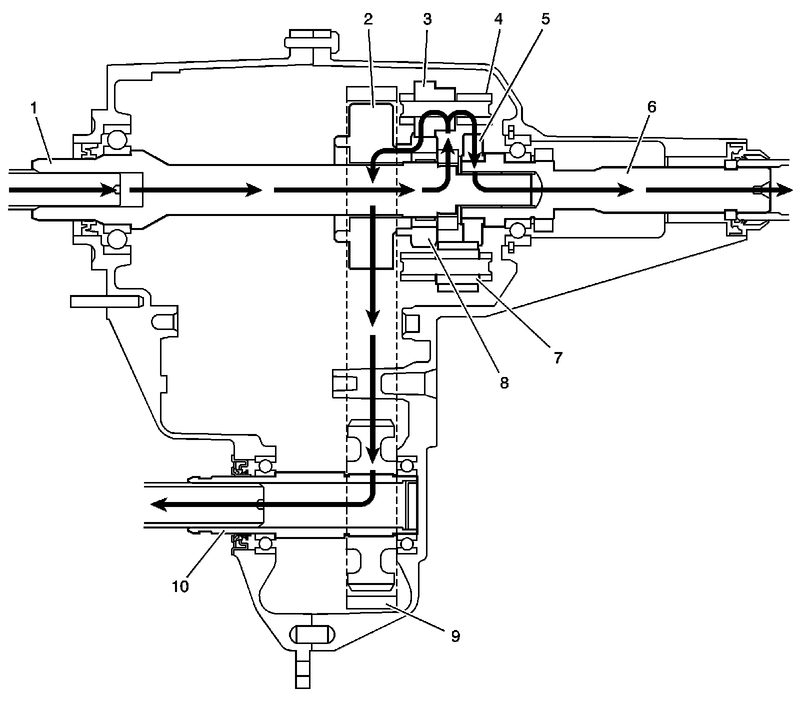

Transfer Case: Description and Operation
Transfer Case Description and Operation
The Borg Warner (BW) model 4485, RPO NR3 transfer case is a 1-speed, full time, all wheel drive (AWD), transfer case. The transfer case provides power to both axles, through an external planetary type differential, which has 2 different sets of pinion gears. The planetary differential provides a 40/60 torque split, front/rear, full time. This means both axles are constantly being driven for maximum traction in all conditions.
The transfer case external type planetary differential functions the same as a typical rear axle differential. The transfer case differential pinion gears function as the spider gears, and the sun gears function as the side gears.
The following actions occur because of the planetary differential:
^ If the vehicle is on a hoist, the front propeller shaft can be rotated by hand.
^ The vehicle cannot be driven if 1 propeller shaft is removed.
^ Operating the vehicle on the hoist can damage the differential pinion gears, by over-spinning.
^ Operating the vehicle with 1 propeller shaft removed causes over-spinning of the differential pinion gears.
The BW 4485 design of the planetary differential allows the use with the Vehicle Stability Enhancement System (VSES) vehicles. The VSES takes use of the planetary differential, by applying braking to a tire that has less traction and dividing the engine torque to the other axle.
The BW 4485 case halves are high-pressure, die-cast magnesium. Ball bearings support the input shaft, the front output shaft, and the rear output shaft. The transfer case requires DEXRON(R)III Automatic Transmission Fluid (ATF) GM P/N 12378470 (Canadian P/N 10952622), which is red in color.
Power Flow
Proper Flow:

When the BW 4485 is operating in the AWD mode, the power flows from the transmission to the transfer case input shaft (1). The input shaft (1) delivers the power to the planetary differential (4). The case of the planetary differential (4) is splined to the input shaft (1). The planetary differential (4) splits the torque 40 percent through the front differential pinion gears (3) to the front sun gear (8). The front sun gear (8) is engaged with the drive sprocket (2), which drives the chain (9) to the front output shaft (10), and power is delivered to the front propeller shaft. 60 percent of the torque to the rear output shaft (6) goes through the rear differential pinion gears (7) and rear sun gear (5), which is connected to the rear output shaft (6) and to the rear propeller shaft.